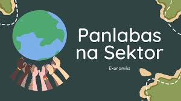
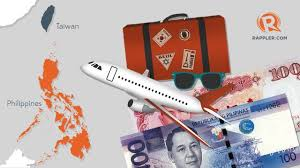

Listen to music while reading ^^

Ano ang impormal na sektor? h2>
KALAKALANG PANLABAS
Palitan ng produkto at serbisyo sa pagitan ng mga bansa
Ito ay nagaganap sapagkat walang bansa ang maaaring makatugon sa lahat ng kanyang pangangailangan ng walang tulong mula sa ibang bansa.
Bilateral: 2 bansa (hal. U.S at PH)
Bloc: Pagpalitan ng isang organisasyon at 1 bansa o 1 organization at isa pang organization (hal. APEC at PH)
EKSPORT (Pagluluwas): pagpapadala ng mga produkto at serbisyo sa ibang bansa
IMPORT (Pag-aangkat): pagbili ng kalakal mula sa ibang bansa
DAHILAN NG KALAKALANG PANLABAS
Pagkakaiba ng Teknolohiya
Pagkakaiba sa Pinagkukunang Yaman
Pagkakaiba sa Panlasa
Pagkakaiba sa Halaga ng Produksyon
PATAKARANG UMAAPEKTO SA KALAKALANG PANLABAS
Taripa/Tariff:
Buwis sa mga produktong inaangkat
Nagpapataas ng presyo at nagpapababa ng benta ng inaangkat ng produkto
Nagpapataw ng mataas na taripa pang mapigil ang pagpasok ng dayuhang produktong kalaban ng lokal na produkto
Ipinapataw upang makalikom ng karagdagang pondo
Kota: (Quota)
Maaaring limitahan (kotahan) ang pagpasok ng mga kalabang produkto
Subsidy:
Tulong na ibinibigay ng gobyerno upang bumaba ang halaga ng produksyon ng mga lokal na produkto.
BATAYAN NG KALAKALANG PANLABAS (David Ricardo)
Absolute Advantage
Nakakalikha ng mas maraming bilang ng produkto gamit ang mas kaunting salik ng produksyon kumpara sa ibang bansa.
Comparative Advantage
Ang bansa ay magkakaroon ng espesyalisasyon sa paglikha ng kalakal.
Kapag kaya ng bansa gawin ang kalakal ng mas efficient kumpara sa ibang bansa.
Hal. Cebu may comparative advantage sa pagluto ng Lechon
BALANCE OF TRADE (BOT)
Kalagayan ng kabayaran ng pagluluwas (export) at sa pag-aangkat (import).
Trade Deficit: import > export
Trade Surplus: import < export
KABUTIHAN NG PAKIKIPAGKALAKALAN
Mas maraming produkto ang mapagpipilian sa pamilihan.
Napapataas nito ang kalidad ng mga produkto na nabibili sa pamilihan
Nagkakaroon ng pagkakaunawaan ang mamamayan ng bansang nakikipagkalakalan.
Lumalawak ang pamilihan ng mga produkto sa bansa.
DI- KABUTIHAN NG PAKIKIPAGKALAKALAN
Nagiging palaasa ang mga mamamayan sa produktong imported
Hindi nalilinang ang pagkamalikhain ng mga mamamayan dahil umaasa na lamang sila sa mga produktong gawa sa ibang bansa
Pagkawala ng sariling pagkakakilanlan bunga ng pagpasok ng dayuhang kultura sa lipunan

Ano-ano ang mga samahan?
SAMAHANG PANDAIGDIGANG PANG-EKONOMIKO
World Trade Organization
Pinasinayaan at nabuo noong Enero 1, 1995
Samahang namamahala sa pandaigdigang patakaran ng sistema ng kalakalan o global trading system sa pagitan ng mga kasaping estado o member states
LAYUNIN
Pagsusulong ng maayos na kalakalan sa pamamagitan ng pagpapababa ng hadlang sa kalakalan (trade barriers)
Plataporma para sa negosasyon at tulong-teknikal sa developing countries.
Paggamit ng trade sanction sa mga kasaping hindi sumusunod sa desisyon ng samahan
Asia-Pacific Economic Council (APEC)
Isulong ang kaunlarang pang-ekonomiya at katiwasayan sa rehiyong Asia-Pacific
Itinatag noong Nobyembre 1989
LAYUNIN
Liberalisasyon ng pakikipagkalakalan at pamumuhunan
Pagpapabilis at pagpapadali ng pagnenegosyo
Pagtutulungang pang-ekonomiya at teknikal
Association of Southeast Asian Nations (ASEAN)
Paunlarin at isulong ang malayang kalakalan sa bawat kasapi ng ASEAN pati ang mga bansang dialogue partner nito.
Itinatag noong August 8, 1967
LAYUNIN
Upang maging ganap ito, nabuo ang ASEAN Free Trade Area (AFTA) noong January 28, 1992, sa Singapore.
Nakabatay sa Common Effective Preferential Tariff (CEPT) na nag-aalis ng taripa at quota para sa mas malayang daloy ng produkto sa ASEAN.
GLOBALISASYON
Proseso ng mabilisang pagdaloy nga mga tao, bagay, impormasyon, produkto sa iba’t ibang bansa.
MULTINATIONAL COMPANIES
Namumuhunang kompanya sa ibang bansa ngunit ang produkto ay hindi nakabatay sa pangangailangan
TRANSNATIONAL COMPANIES
Namumuhunang kompanya sa ibang bansa ngunit ang produkto ay nakabatay sa pangangailangan
OUTSOURCING
Pagkuha ng kompanya ng serbisyo mula sa isang kompanya na may kaukulang bayad
Mapagaan ang gawain ng isang kompanya upang mapagtuunan nila ng pansin ang sa palagay nila ay higit na mahalaga
URI:
OFFSHORING
Pagkuha ng serbisyo ng kompanya sa ibang bansa na naniningil ng mas mababang bayad
NEARSHORING
Paglilipat ng mga operasyon o serbisyo ng negosyo sa isang kalapit na bansa
lokasyon ay malapit (kadalasan sa parehong time zone o rehiyon) upang mas mabilis ang komunikasyon, magkatulad ang kultura, at mas mababa ang gastos
ON-SHORING
Domestic Outsourcing (sa loob ng bansa)
Bunga ng mababang gastusin sa operasyon